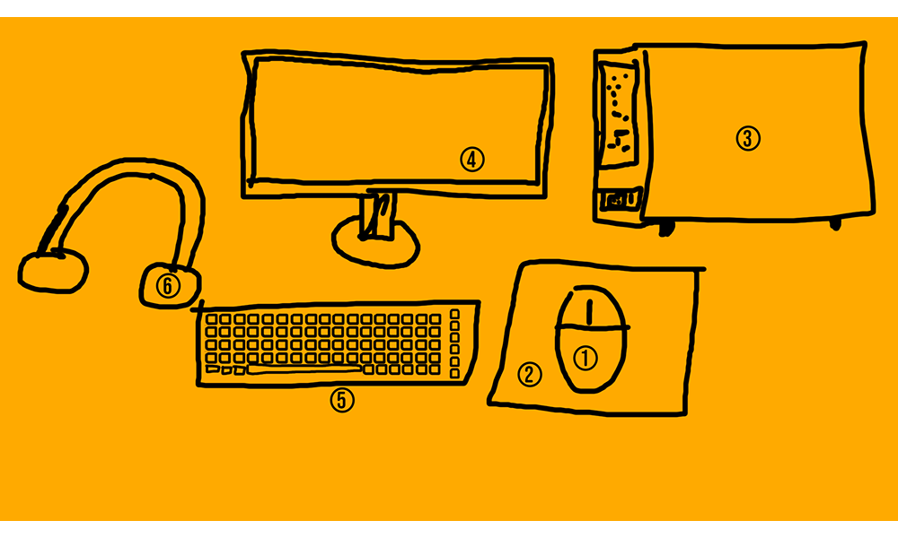

Tehnika pildikaart

Klaviatuur ehk sõrmistik on riistvaraline arvuti juhtimis- või andmesisestusvahend. Klaviatuuril on sõrmedega vajutatavad klahvid ehk sõrmised, mis töötavad kas mehaaniliste hoobade või elektriliste lülititena.
Tagasi